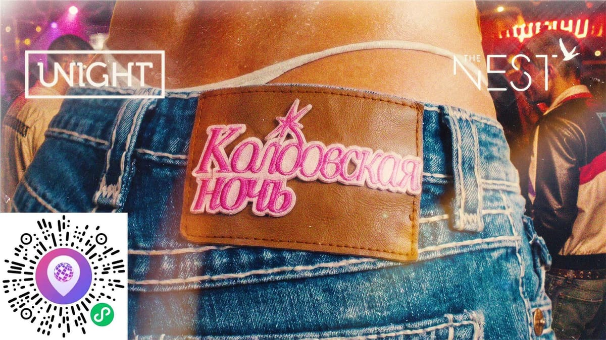

upcoming / Medium
Enchanted Night
RA lists Enchanted Night as a 2000s pop/disco party at TBA - The Nest with SOLO and ALI RIBO. Keep as complete RA coverage, not a rave pick.

DateJun 20
Time22:00-02:30
VenueTBA - The Nest
DistrictShanghai
Sounddisco, pop, 2000s party
PriceCheck RA / venue
Age / IDCheck venue
Source layertrusted-ra
Intensitysoft
Credibilityloose
Event Tags
Simple tags for sound, room context, ticket/source status, and details that still need a source check.
How We Recommend This
- RecommendationIncluded because the lineup (SOLO (Enchanted Night listing) and ALI RIBO) gives social house, disco, or date-route electronic music readers a concrete reason to consider it, even if it is not the hardest pick on the calendar.
- Best forReaders looking for a casual pop/disco party rather than underground electronic pressure.
- Verify before goingConfirm exact The Nest address, ticket price, age policy, and door state through RA or the organizer before going.
- Source confidenceRA coverage: title, date, time, venue label, promoter, lineup, and genre are visible on Resident Advisor; price, age, and exact address need confirmation. Local flyer assets are stored under assets/posters and recorded in posterEvidence.localFiles for audit and display.
Lineup and Notes
- SOLO (Enchanted Night listing)SOLO (Enchanted Night listing) plays a disco, pop, 2000s party style. RA lists SOLO on the Enchanted Night lineup; kept distinct from Solo (UA) until a profile source proves they are the same artist.
- ALI RIBOALI RIBO: disco, pop, 2000s party selection. RA lists ALI RIBO on the Enchanted Night lineup.
Source Trail
- Resident Advisor trusted-ra / checked 2026-06-14
Trust Ledger
- Last checked2026-06-14
- Selection basisIncluded for source visibility, room fit, and these editorial signals: low techno fit, date route, late room.
- Commercial relationshipNo paid placement recorded.
- Correction routeSend source fixes through RED 980793145 or the corrections policy.
- PolicyHow We Recommend / Corrections